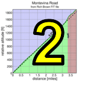
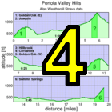

|  |  |
 |

|
| Adrien Costa showing his broken collarbone isn't holding him back as he shatters the Low-Key course record and Strava KOM (Tom Everman) |
Bohlman has justifiably acquired an almost mythical status in Low-Key. There is something almost profound about the experience. This is especially true with our present route, which tackes some truly ferocious grades on Quickert before On Orbit is even reached. After the turn onto On Orbit, the temptation to think "this isn't so bad after all!" is there for a few brief moments, until a corner is turned and the true horror of the road is made clear.
The most remarkable story today was Adrien Costa, who crashed and broke his collarbone the week prior to Montebello. Less than 3 weeks in, he domonated Low-Key's most intimidating climb for 2013. Adrien's time of 24:57 beat the prior Low-Key course record of 26:08 set by Chris Phipps in 2011. It felt just one second short of matching Tracy Colwell's 1997 time for Bohlman-On Orbit-Bohlman, the latter likely a faster route. Indeed, the Low-Key was just one segment in Adrien's much longer ride on the day.
Although Adrien's time was the fastest of the men's times, there was an exceptional turn-out of quick climbers today. Ken Spencer, who broke 15 minutes up Old La Honda this year, was second. New Low-Key overall leader Stefano Profumo was third. And David Collet of Pen Velo was fourth. They all broke Scott's prior record time.
Among the women, it was another excellent showing, as 12 women completed the brutal course. At the front, it was an amazing contest, as at the top of On Orbit Jennie Phillips had an 11 second lead on McLovely Brown. The course record stays with Kelly Crowley with her 31:34 from 2011 (the original version of this story inadvertantly failed to consider 2011 results).
Bill Bushnell once again won the hybrid-electric division, and once again we had a new course record. Bill has been on a roll this year, looking lean and mean and ready for the Low-Key season.
On the junior side, of course it was Adrien all the way. He looked to have some serious competition in Luca Schwarzbauer from Germany, but Luca, an accomplished mountain biker, apparently turned back before the On Orbit summit.
Special thanks today to Bill Bushnell for his excellent assistance with results. The attention and detail he applies to finish line photos is just spectacular.
KOM special mention qualifiers indicated with orange background. Discarded scores are crossed out. Volunteer weeks are indicated with V. Ride credit weeks are indicated with RC. V and RC weeks are equivalent for scoring.
| pl | # | name | team | cat | time | mph | fph | score |
|---|---|---|---|---|---|---|---|---|
| 1 | 33 | McLovely Brown | The Brown Zone | Mother Of Two | 32:57 | 8.08 | 3704 | 122.24 |
| 2 | 321 | Jennie Phillips | Sr's & Mr's of No Mercy | 50+ | 33:10 | 8.03 | 3680 | 121.49 |
| 3 | 41 | Helen Casabona | Pen Velo/Pomodoro | 50+ | 33:52 | 7.87 | 3604 | 119.16 |
| 4 | 149 | Lynn Sestak | The Brown Zone | 50+ | 35:42 | 7.46 | 3418 | 113.45 |
| 5 | 301 | Amy Bruski | Sr's & Mr's of No Mercy | 35+ | 37:08 | 7.17 | 3287 | 109.37 |
| 6 | 35 | Sugar Brown | The Brown Zone | Fat Camp | 37:17 | 7.15 | 3273 | 108.96 |
| 7 | 324 | Carla Rydholm | 35+ | 38:22 | 6.94 | 3181 | 106.09 | |
| 8 | 306 | Chris Davis | LGBRC | 39:50 | 6.69 | 3064 | 102.45 | |
| 9 | 305 | Christy Cowley | 45+ | 40:08 | 6.64 | 3041 | 101.74 | |
| 10 | 67 | Lisa Emmerich | Sr's & Mr's of No Mercy | 50+ | 42:13 | 6.31 | 2891 | 97.06 |
| 11 | 318 | Trish Pacheco | Sr's & Mr's of No Mercy | 45+ | 46:40 | 5.71 | 2615 | 88.41 |
| 12 | 217 | Magdalena Novotna | El Camino YMCA | 45+ | 49:50 | 5.35 | 2449 | 83.17 |
reference time for division Women = 40:53
| pl | # | name | team | cat | time | mph | fph | score |
|---|---|---|---|---|---|---|---|---|
| 1 | 57 | Adrien Costa | Garmin Juniors | 24:57 | 10.68 | 4891 | 132.99 | |
| 2 | 329 | Kenneth Spencer | Western Wheelers | 35+ | 26:14 | 10.16 | 4652 | 126.93 |
| 3 | 132 | Stefano Profumo | Bike Trip/Symantec | 35+ | 26:51 | 9.92 | 4545 | 124.21 |
| 4 | 49 | David Collet | Pen Velo/Pomodoro | 40+ | 26:51 | 9.92 | 4545 | 124.21 |
| 5 | 53 | Tracy Colwell | Team Colwell | 45+ | 27:42 | 9.62 | 4406 | 120.66 |
| 6 | 157 | Joe Sullivan | San Jose Bike Club | 35+ | 27:50 | 9.57 | 4385 | 120.12 |
| 7 | 319 | Dan Perry | Bike Trip/Symantec | 40+ | 28:20 | 9.40 | 4307 | 118.15 |
| 8 | 14 | Rich McLovin Brown | The Brown Zone | 35+ | 28:25 | 9.37 | 4295 | 117.82 |
| 9 | 38 | Ciaran Byrne | Sr's & Mr's of No Mercy | 40+ | 28:42 | 9.28 | 4252 | 116.74 |
| 10 | 207 | Robert Easley | Sr's & Mr's of No Mercy | 45+ | 29:20 | 9.08 | 4160 | 114.39 |
| 11 | 58 | Andy Crews | Diablo | 40+ | 29:33 | 9.02 | 4130 | 113.61 |
| 12 | 154 | Tom Stanis | 35+ | 29:33 | 9.02 | 4130 | 113.61 | |
| 13 | 152 | Daryl Spano | San Jose Bike Club | 45+ | 29:48 | 8.94 | 4095 | 112.72M |
| 14 | 73 | Chris Furgiuele | Studio Velo Racing | 40+ | 29:48 | 8.94 | 4095 | 112.72 |
| 15 | 158 | Nils Tikkanen | Bike Trip/Symantec | Honey Badger | 29:52 | 8.92 | 4086 | 112.49 |
| 16 | 68 | Joe Fant | The Brown Zone | 50+ | 29:53 | 8.91 | 4084 | 112.43 |
| 17 | 214 | Alexander Komlik | San Jose Bike Club | 45+ | 30:07 | 8.85 | 4052 | 111.62 |
| 18 | 70 | Klaus Fleischmann | 45+ | 30:54 | 8.62 | 3950 | 108.98 | |
| 19 | 331 | Joel Wilson | Menlo Bike Club | 30+ | 30:55 | 8.62 | 3947 | 108.93 |
| 20 | 327 | Brandon Smith | Team CVC | 25+ | 31:12 | 8.54 | 3912 | 108.01 |
| 21 | 144 | Eddie Santos | Bike Trip/Symantec | 25+ | 31:21 | 8.50 | 3893 | 107.53 |
| 22 | 32 | Habañero Brown | The Brown Zone | Wheel Horse | 31:26 | 8.48 | 3883 | 107.26 |
| 23 | 201 | Dino Brown | The Brown Zone | 50+ | 31:37 | 8.43 | 3860 | 106.68 |
| 24 | 74 | Lindsey Furtado | Team CVC | 30+ | 31:42 | 8.40 | 3850 | 106.42 |
| 25 | 124 | Kitchen Patrol | The Brown Zone | 31:50 | 8.37 | 3834 | 106.01 | |
| 26 | 138 | Doug Reynolds | Nightriders | 60+ | 31:56 | 8.34 | 3822 | 105.70 |
| 27 | 95 | Mark King | Equipe Flamme Rouge | 45+ | 32:01 | 8.32 | 3812 | 105.44 |
| 28 | 308 | Jeff Farnsworth | San Jose Bike Club | 55+ | 32:06 | 8.30 | 3802 | 105.19 |
| 29 | 79 | Bill Harkola | Pen Velo/Pomodoro | 55+ | 32:22 | 8.23 | 3771 | 104.38 |
| 30 | 164 | Matt Wocasek | Bike Trip/Symantec | 45+ | 32:24 | 8.22 | 3767 | 104.28 |
| 31 | 109 | Russ McCrary | Sr's & Mr's of No Mercy | 55+ | 32:26 | 8.21 | 3763 | 104.18 |
| 32 | 98 | Michael Kowalchuk | 25+ | 32:58 | 8.08 | 3702 | 102.61 | |
| 33 | 96 | Terrance Kloeckl | Last Chosen | 50+ | 33:04 | 8.06 | 3691 | 102.32 |
| 34 | 302 | Michael Busha | 30+ | 33:13 | 8.02 | 3674 | 101.89 | |
| 35 | 309 | Andrew Fitzhugh | 50+ | 34:28 | 7.73 | 3541 | 98.45 | |
| 36 | 307 | Mark Debbage | 45+ | 34:30 | 7.72 | 3537 | 98.36 | |
| 37 | 212 | Peter Ingram | Steely Man | 55+ | 34:31 | 7.72 | 3536 | 98.32 |
| 38 | 330 | Andy Sutterfield | 20+ | 34:40 | 7.68 | 3520 | 97.92 | |
| 39 | 317 | Sani Obhodas | Bar Utd | 25+ | 34:41 | 7.68 | 3519 | 97.88 |
| 40 | 166 | William Yee | Team CVC | 35+ | 35:02 | 7.60 | 3484 | 96.97 |
| 41 | 85 | Tim Irvine | LGBRC | 40+ | 35:08 | 7.58 | 3474 | 96.71 |
| 42 | 314 | Matthew Lewsadder | LGBRC | 35+ | 35:09 | 7.58 | 3472 | 96.67 |
| 43 | 300 | Billy Bob Brown | The Brown Zone | 50+ | 35:10 | 7.58 | 3470 | 96.62 |
| 44 | 37 | Scott Byer | 45+ | 35:27 | 7.51 | 3443 | 95.90 | |
| 45 | 36 | Nic Brummell | Atlas | 50+ | 35:30 | 7.50 | 3438 | 95.78 |
| 46 | 122 | Bart Niechwiej | 35+ | 35:45 | 7.45 | 3414 | 95.16 | |
| 47 | 226 | StephensWilcox | 45+ | 35:56 | 7.41 | 3396 | 94.70 | |
| 48 | 127 | Ramon Periquet | Team CVC | 50+ | 36:03 | 7.39 | 3385 | 94.42 |
| 49 | 316 | Bogdan Marian | 30+ | 36:07 | 7.38 | 3379 | 94.26D | |
| 50 | 135 | Mihai R. | 30+ | 36:27 | 7.31 | 3348 | 93.45 | |
| 51 | 213 | Larry Klein | GOM | 50+ | 36:41 | 7.26 | 3327 | 92.90 |
| 52 | 25 | Sam Beal | Volagi | 60+ | 37:02 | 7.19 | 3295 | 92.08 |
| 53 | 326 | Jeff Shute | 35+ | 37:17 | 7.15 | 3273 | 91.51 | |
| 54 | 205 | Frank Drobot | Team Djament | 60+ | 38:45 | 6.87 | 3149 | 88.28 |
| 55 | 328 | Ray Smith | Team CVC | 55+ | 39:43 | 6.71 | 3073 | 86.28 |
| 56 | 71 | Stephen Fong | CyclePath Racing | 0 | 40:01 | 6.66 | 3050 | 85.68 |
| 57 | 303 | Pat Callahan | Quadzilla Racing | 45+ | 40:38 | 6.56 | 3003 | 84.46D |
| 58 | 230 | Kris McQueen | 35+ | 40:40 | 6.55 | 3001 | 84.40 | |
| 59 | 310 | Uli Haug | uzeman | 45+ | 41:17 | 6.45 | 2956 | 83.23 |
| 60 | 130 | Mark Powers | Pen Velo/Pomodoro | 55+ | 41:32 | 6.41 | 2938 | 82.76 |
| 61 | 113 | Ed Miller | SLACer | 70+ | 43:31 | 6.12 | 2804 | 79.24 |
| 62 | 139 | Paul Rode | LGBRC | 35+ | 44:23 | 6.00 | 2750 | 77.80 |
| 63 | 121 | Ronald Ng | Zombie Raccoon | 50+ | 45:36 | 5.84 | 2676 | 75.87 |
| 64 | 39 | Tuan Cao | 30+ | 46:03 | 5.79 | 2650 | 75.18 | |
| 65 | 312 | Scott Johnson | Menlo Bike Club | 35+ | 46:36 | 5.72 | 2619 | 74.35 |
| 66 | 323 | David Reidy | Menlo Bike Club | 46:39 | 5.71 | 2616 | 74.28 | |
| 67 | 150 | Gregory P Smith | Zombie Raccoon | 35+ | 46:41 | 5.71 | 2614 | 74.23 |
| 68 | 105 | Doug MacPherson | Pen Velo/Pomodoro | 40+ | 46:42 | 5.70 | 2613 | 74.20 |
| 69 | 143 | Koushik Sampath | LGBRC | 25+ | 50:47 | 5.25 | 2403 | 68.63 |
reference time for division Men = 33:53
| pl | # | name | team | cat | time | mph | fph | score |
|---|---|---|---|---|---|---|---|---|
| 1 | 6 | Bill Bushnell | Low-Key | Hors | 17:50 | 14.94 | 6843 | 109.67 |
reference time for division Hybrid Electric = 19:41
| pl | team | score | riders |
|---|---|---|---|
| 1 | Bike Trip/Symantec | 354.85 | Stefano Profumo, Dan Perry, Nils Tikkanen, Eddie Santos, Matt Wocasek |
| 2 | The Brown Zone | 353.51 | Rich McLovin Brown, Joe Fant, Habañero Brown, Dino Brown, Kitchen Patrol, McLovely Brown, Billy Bob Brown, Lynn Sestak, Sugar Brown |
| 3 | Sr's & Mr's of No Mercy | 352.63 | Ciaran Byrne, Robert Easley, Russ McCrary, Jennie Phillips, Amy Bruski, Lisa Emmerich, Trish Pacheco |
| 4 | Pen Velo/Pomodoro | 347.75 | David Collet, Bill Harkola, Helen Casabona, Mark Powers, Doug MacPherson |
| 5 | San Jose Bike Club | 344.47 | Joe Sullivan, Daryl Spano, Alexander Komlik, Jeff Farnsworth |
| 6 | 312.13 | Tom Stanis, Michael Kowalchuk, Scott Byer, Bart Niechwiej, Mihai R., Jeff Shute, Kris McQueen, Tuan Cao | |
| 7 | Team CVC | 311.40 | Brandon Smith, Lindsey Furtado, William Yee, Ramon Periquet, Ray Smith |
| 8 | LGBRC | 295.83 | Tim Irvine, Matthew Lewsadder, Chris Davis, Paul Rode, Koushik Sampath |
| 9 | Menlo Bike Club | 257.56 | Joel Wilson, Scott Johnson, David Reidy |
| 10 | Zombie Raccoon | 150.10 | Ronald Ng, Gregory P Smith |
| 11 | Garmin Juniors | 132.99 | Adrien Costa |
| 12 | Western Wheelers | 126.93 | Kenneth Spencer |
| 13 | Team Colwell | 120.66 | Tracy Colwell |
| 14 | Diablo | 113.61 | Andy Crews |
| 15 | Studio Velo Racing | 112.72 | Chris Furgiuele |
| 16 | Low-Key | 109.67 | Bill Bushnell |
| 17 | Nightriders | 105.70 | Doug Reynolds |
| 18 | Equipe Flamme Rouge | 105.44 | Mark King |
| 19 | Last Chosen | 102.32 | Terrance Kloeckl |
| 20 | Steely Man | 98.32 | Peter Ingram |
| 21 | Bar Utd | 97.88 | Sani Obhodas |
| 22 | Atlas | 95.78 | Nic Brummell |
| 23 | GOM | 92.90 | Larry Klein |
| 24 | Volagi | 92.08 | Sam Beal |
| 25 | Team Djament | 88.28 | Frank Drobot |
| 26 | CyclePath Racing | 85.68 | Stephen Fong |
| 27 | Quadzilla Racing | 84.46 | Pat Callahan |
| 28 | uzeman | 83.23 | Uli Haug |
| 29 | El Camino YMCA | 83.17 | Magdalena Novotna |
| 30 | SLACer | 79.24 | Ed Miller |